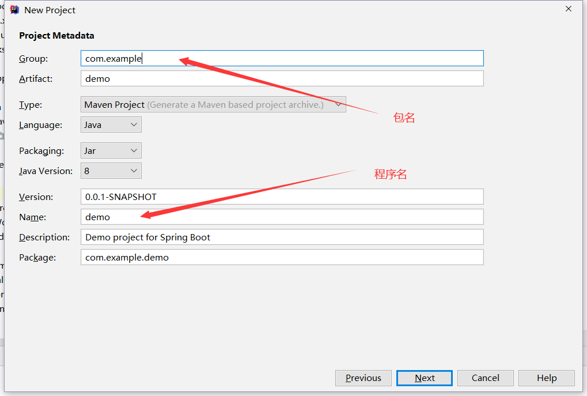

BGM : Deep East Music - Sunny Jim
论如何使用万恶的IDEA创建程序....
这他娘的就是IDEA

遵照如下步骤
初次使用需要导入Maven依赖，国内建议使用镜像
在Setting.xml中加入如下的镜像代码（似乎是阿里镜像）
<mirror>
<id>alimaven</id>
<name>aliyun maven</name>
<url>http://maven.aliyun.com/nexus/content/groups/public/</url>
<mirrorOf>central</mirrorOf>
</mirror>
然后就可以快乐的自动导包儿了~！
导完之后
在DemoApplication中加入如下代码
package com.example.demo;
import org.springframework.boot.SpringApplication;
import org.springframework.boot.autoconfigure.SpringBootApplication;
import org.springframework.web.bind.annotation.GetMapping;
import org.springframework.web.bind.annotation.RestController;
@SpringBootApplication //标注一个主程序，表明这是springboot应用
@RestController
public class DemoApplication {
public static void main(String[] args) {
//启动springboot应用
SpringApplication.run(DemoApplication.class, args);
}
@GetMapping("/hello")
public String hello() {
return "Hello World";
}
}
运行！~
这时可以打开浏览器，输入
localhost:8080/hello
向浏览器发送请求即可